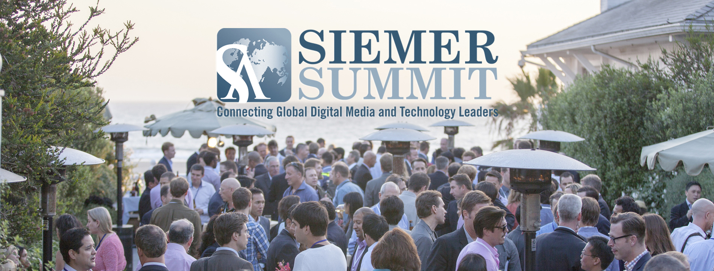
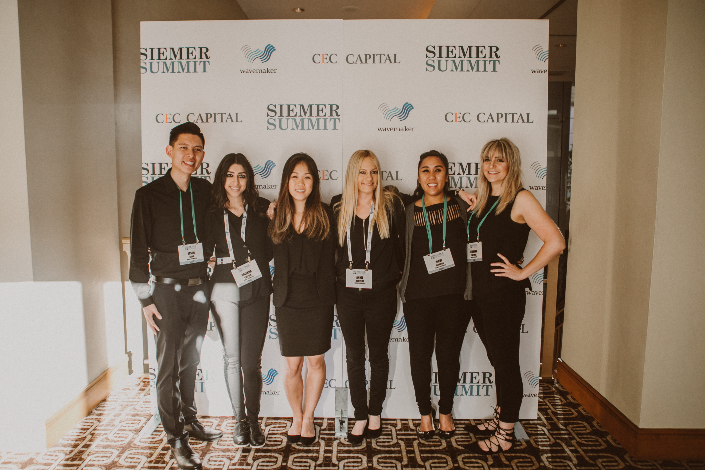

Siemer & Associates LLC is a global boutique merchant bank dedicated to offering candid insight and guidance to Digital Media,
Software and Internet companies throughout their business life cycles.
Comprised of industry veterans who have worked both inside and out of technology enterprises,
S&A has successfully completed more than 70 transactions that aggregated over $3 billion in sell-side mandates and surpassed $1.5 billion in equity capital.
Headquartered in Los Angeles with partner office in Sydney,
S&A offers exceptional corporate capital raising, financial advisory services and M&A,
specializing in complex cross-border transactions.

SIEMER SUMMIT
As an Operations and Event Planning Intern,
I assisted in the planning and execution of the Siemer Summit,
an annual invite-only digital media and software conference attended by C-level executives,
tech entrepreneurs and investors. I utilized Airtable, Event Farm and Excel to track over 1,000 attendees and over 50 industry speakers.
Furthermore, I updated the official website through Wordpress to mirror changes in event logistics and scheduling and introduced an event-specific app used by attendees to set up meetings and follow the agenda.
At the conference itself, I checked in attendees,
managed flow of personnel and oversaw breakout sessions.
